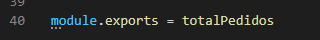
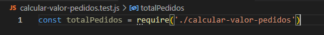
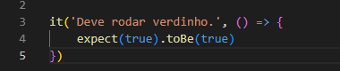
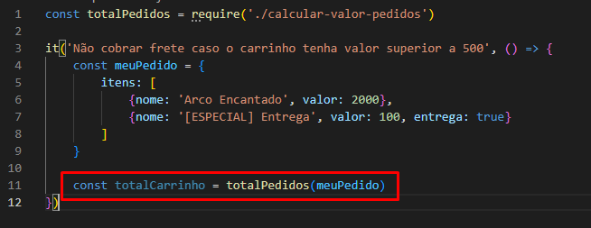
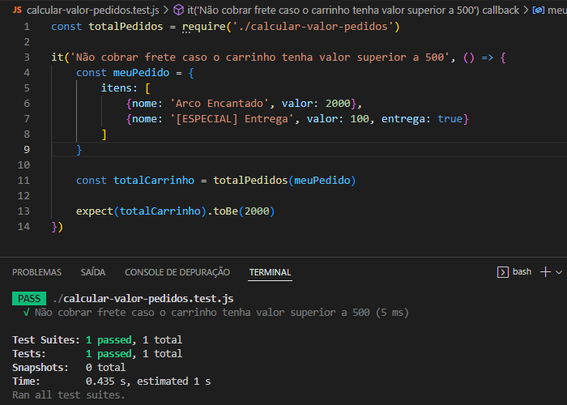
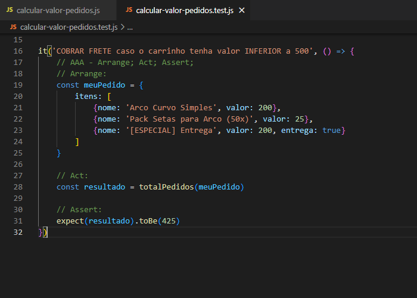
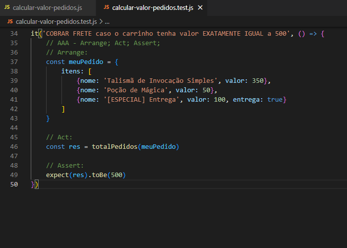

-
1° - No arquivo das FUNCIONALIDADES, EXPORTAR as funções que serão testadas.

module >>> Módulo
.exports >>> Funcionalidade do 'module'
= >>> Sinal de atribuição
totalPedidos >>> Nome da função OBS: SEM PARÊNTESES
-
2° - No arquivo dos TESTES, IMPORTAR as funções que serão testadas.

const >>> Variável
totalPedidos >>> Nome da função OBS: SEM PARÊNTESES
= >>> Sinal de atribuição
require() >>> Funcionalidade
require('Caminho do arquivo das funções') OBS: Não precisa especificar o .js no final do caminho do arquivo-funções
-
3° - Criar a estrutura inicial do teste

it() >>> Funcionalidade
it('Mensagem para quando o teste for true', () => {}) >>> 'msg' + Arrow Function
it('msg' () => {expect(true).toBe(true)}) >>> Esperando que (true) seja (true)
-
4° - Revisar o fluxo das funções do arquivo-funções.
-
5° - Escolher um primeiro fluxo dos vários fluxos existentes no arquivo-funções e depois pensar numa boa mensagem para mostrar quando teste for True, ou seja, pensar num bom nome pro teste - um nome descritivo para o que ele está testando.
-
6° - AAA -> 3 Passos da criação de um teste.
Colocar os objetos/coisas dentro da parte dos objetos/coisas.
ARRANGE >>> ARRUMAR - [OBJETO DE TESTE] -> Organizar uma coisa/objeto/array
ACT >>> AGIR - [O QUE SERÁ TESTADO] -> O que será realmente testado
ASSERT >>> ASSERÇÃO - [QUAL O RESULTADO ESPERADO] -> Qual o resultado esperado
OBS: Aqui você pode criar um 'pedido'/objetos quaisquer, desde que dentro do escopo correto, para testar o quanto quiser.
-
7° - Para o expect() funcionar, a função que está sendo testada tem que retornar alguma coisa. No nosso caso, essa função vai retornar o valor final do carrinho de compras.
Jogar o resultado dessa função para dentro de uma variável.
NOTA: mantendo o cursor em cima da função + F12 >>> Vai entrar direto na função. Atalho TOPZERA.
- 7°.2 - Então, atribuimos à const 'totalCarrinho' a função 'totalPedidos()' passando por parâmetro da mesma o array de itens que está em 'meuPedido'.

-
8° - Substituir o 'expect(true).toBe(true)' pelo que você quer testar.
-
8°.2 - Fim do primeiro fluxo de teste.

-
9° - Partir pro segundo fluxo de teste.
Fim do segundo fluxo de teste.

-
10° - Partir pro terceiro fluxo de teste.
Fim do terceiro fluxo de teste.
